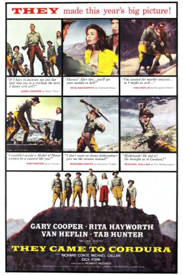
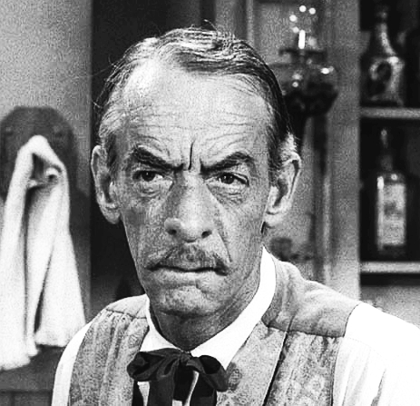

#10620 Sie kamen nach Cordura
Alternativ: They Came to Cordura (Englischer Titel)
 
 IMDB-Wertung: 6.5 / 10
IMDB-Wertung: 6.5 / 10  Metascore: 0
Metascore: 0 
Nahe der mexikanischen Grenze marschieren sechs Männer und eine Frau durch die glühende Wüste - ohne Hoffnung, ohne Aussicht, ihr Ziel je zu erreichen: Cordura. Fünf verrohte Desperados, eine Spionin und ein Major - sie nannten ihn "Feigling". Die Desperados schrecken vor nichts zurück - nicht einmal vor Mord. "Helden" - in Wahrheit jedoch menschliche Versager. Major Thorn, der "Feigling", beweist als einziger echten Mut und wirkliche Kraft...
Jahr: 1959
Dauer: 98 Minuten
FSK: 16
Land: USA Studio: Columbia Pictures CorporationTonspuren: DD2.0 - ,
Untertitel:
Auflösung: 1080p (1920x816) Größe: 5672 MB
Genre: Drama, Abenteuer, Krieg, Western, Geschichte
Regisseur: Robert Rossen
Drehbuch: Ivan Moffat, Robert Rossen, Glendon Swarthout
Soundtrack: Elie Siegmeister
Darsteller:
 Gary Cooper als Major Thomas Thorn
Gary Cooper als Major Thomas Thorn- Rita Hayworth als Adelaide Geary
 Van Heflin als Sgt. John Chawk
Van Heflin als Sgt. John Chawk- Tab Hunter als Lt. William Fowler
 Richard Conte als Cpl. Milo Trubee
Richard Conte als Cpl. Milo Trubee Michael Callan als Pvt. Andrew Hetherington
Michael Callan als Pvt. Andrew Hetherington- Dick York als Pvt. Renziehausen
- Robert Keith als Colonel Rogers
- Jim Bannon als Capt. Paltz
- Edward Platt als Colonel DeRose
- Sam Buffington als 1st Correspondent
-  Clem Fuller als (uncredited)
- Carlos Romero als Arreaga
- Maurice Jara als Mexican Federale
- Arthur Hanson als 2nd Correspondent
- Wendell Hoyt als Cavalry Trooper (uncredited)
- Maggie als Parrot (uncredited)
Datei: X:\HD-Western-1900-1959\Sie kamen nach Cordura (1959, FSK16, 1920x816).mkv seit 04.02.2019
Festplatte: HD Eastern+Western
 Es gibt insgesamt 98 Filme in der Gruppe 'HD-Western-1900-1959'
Es gibt insgesamt 98 Filme in der Gruppe 'HD-Western-1900-1959'